Juan Pablo Soto
Hi there! En esta página encontrarás información sobre mí y mis redes sociales. Saludos!
Hi there! on this page you will find information about me and my social networks. Greetings!.
Ubicación
Build your own by forking LittleLink.